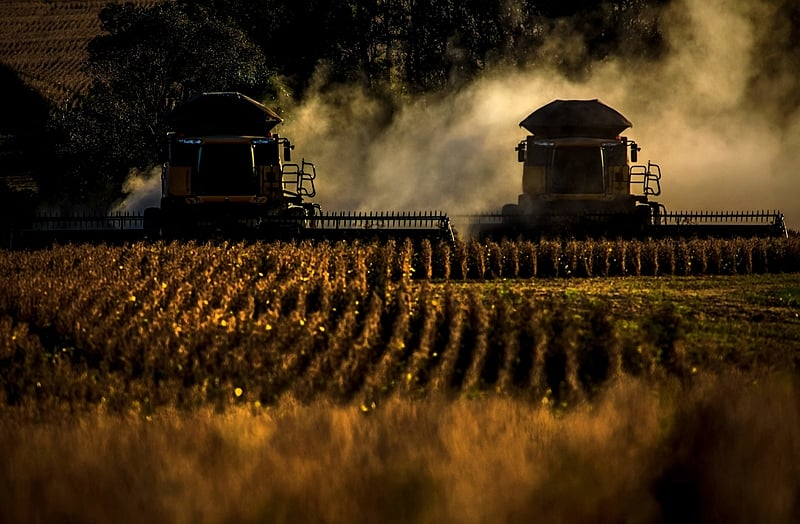

Do campo para cidades colhendo oportunidades
A agricultura e pecúria: uma aliança com a tecnologia
Agricultura e a Pecuária são atividades essencias para um dos grandes avanços tecnologicos no campo é o uso de drone ,esses equipamentos são capazes de monitorar os campos por períodos extensos.
Outra tecnologia que tem revolucionado a agricultura é a aplicação de fertilizantes e defensivos.
A automação também tem sido uma aliança no campo,máquinas agrícolas modernas realizam diversas funçoes.
Não é novidade que a agricultura é uma atividade profundamente conectada às variações das estações do ano e do clima como um todo. A questão é: como tirar o melhor proveito do que cada época em cada região do Brasil tem a oferecer?
Precisamos sempre lembrar, claro, que cada canto do país tem suas particularidades climáticas, variando em níveis de chuva, luminosidade e temperatura, por exemplo. E isso é ótimo, pois traz mais diversidade e possibilidades para a produção agrícola, tornando o Brasil uma potência em produtividade.
Assim, para tirar o melhor proveito da área durante todo o ano, é normal alternar o plantio, sendo essa técnica conhecida como safra e safrinha. Com um bom planejamento, em alguns estados é possível cultivar até três culturas diferentes em um ano agrícola. .png)